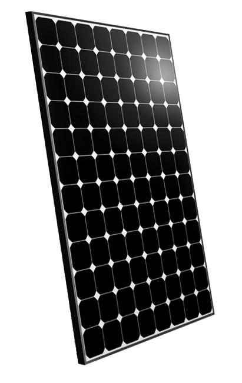
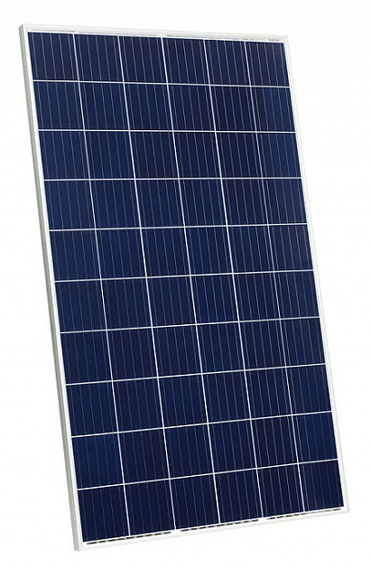

Paneles solares
El sol puede proporcionar energía suficiente para dar electricidad a todo el planeta.
Los paneles solares son el intermediario que hace que la luz solar nos sirva de energía.
Paneles Monocristalinos
Las placas solares monocristalinas son una de las 2 tecnologías más usadas en la producción de energía fotovoltaica.
La tecnología monocristalina hace referencia a la manera en la cual están fabricadas las placas solares. Un panel solar se fabrica principalmente con silicio y se compone de varias celdas fotovoltaicas que se conectan eléctricamente entre sí en serie y en paralelo. Tal y como indica el nombre de esta tecnología, los paneles solares monocristalinos están formados por celdas de un solo cristal.
Para las instalaciones fotovoltaicas residenciales, siempre recomendamos los paneles solares monocristalinos de 60 celdas.Se trata de la cantidad de energía que podemos producir en un espacio determinado, aspecto especialmente importante en las viviendas unifamiliares, puesto que los tejados son limitados.
Paneles Policristalinos
Los paneles solares policristalinos son menos usados en las instalaciones de autoconsumo residencial y más en las industriales.
Los paneles solares policristalino tienen un amplio uso, especialmente en las instalaciones industriales. Estos resultan rentables en tal situaciones, puesto que el precio es inferior que el de las placas solares monocristalinas.
La tecnología policristalina hace referencia a la tecnología utilizada en la fabricación de los módulos. Esta tecnología tiene impacto sobre el rendimiento de los paneles solares y sobre el aspecto de los mismos. Los paneles solares policristalinos se definen por su color azulado. Estos tienen un aspecto característico, siendo los varios cristales de silicio visibles.
